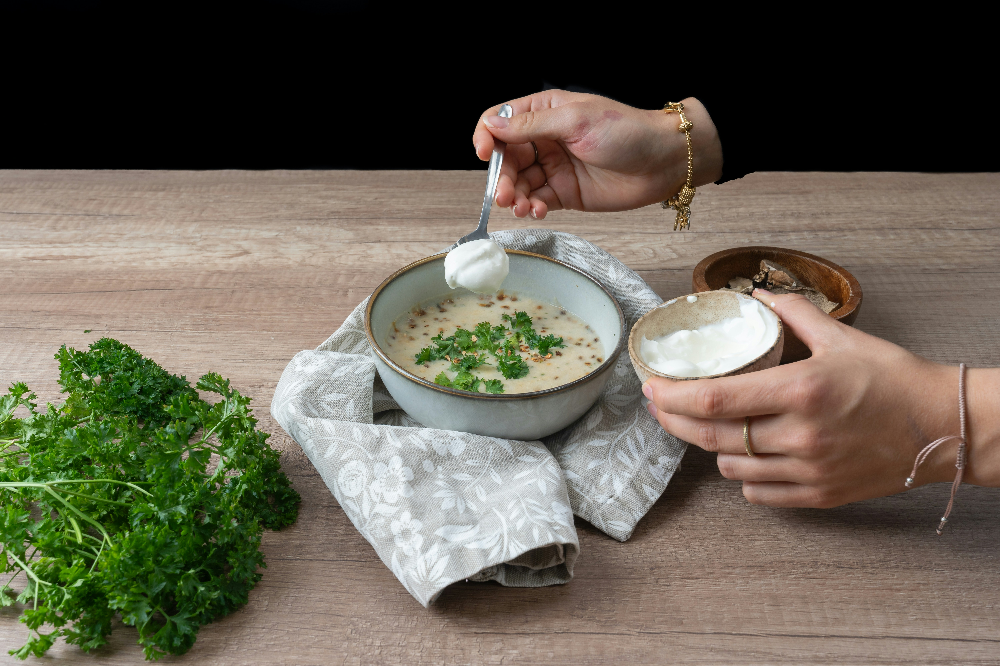

Crema de champiñones
Suave y aromática

Ingredientes
400 g champiñones
1 cebolla, 2 dientes de ajo
200 ml crema o leche
Preparación
Sofreír cebolla, ajo y champiñones. Licuar con crema.
Calentar y ajustar sazón antes de servir.
← Volver a Sopas